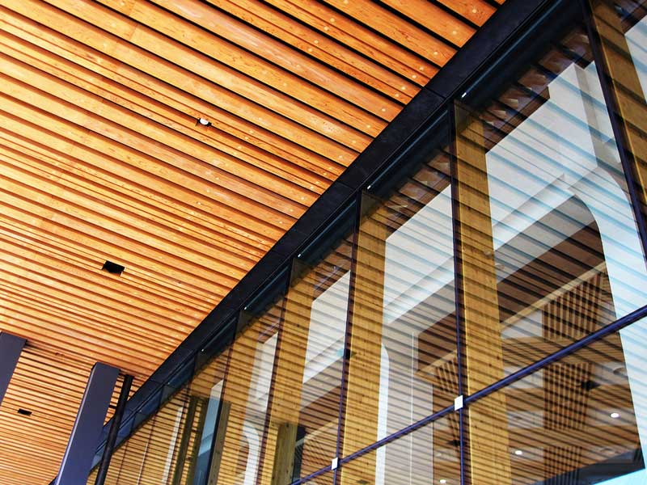
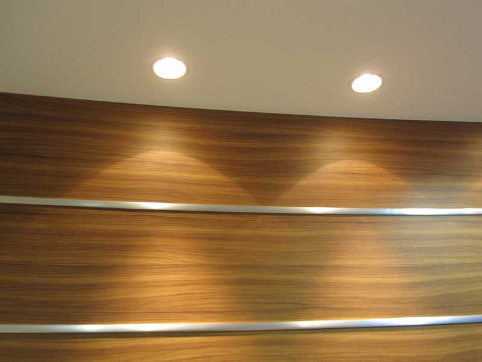
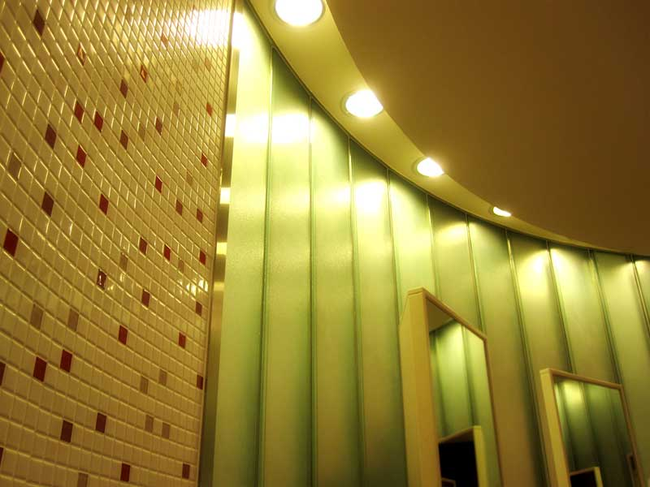
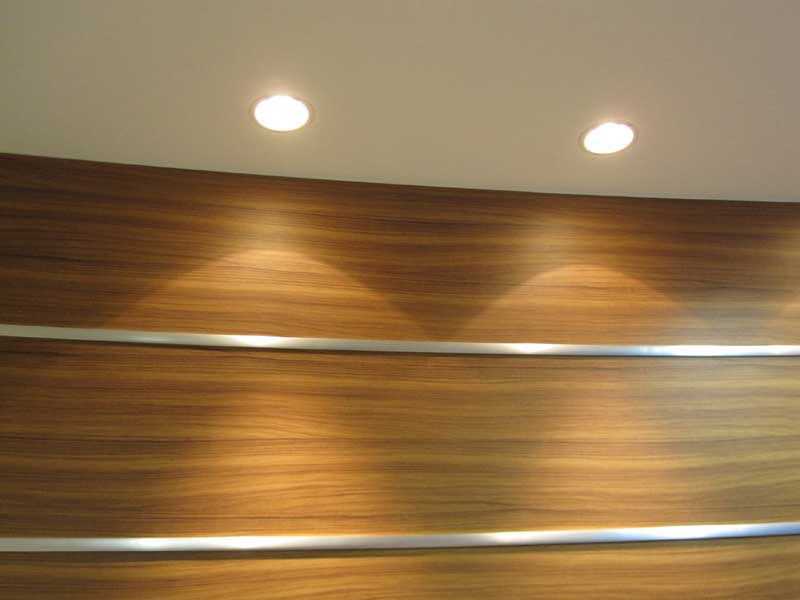
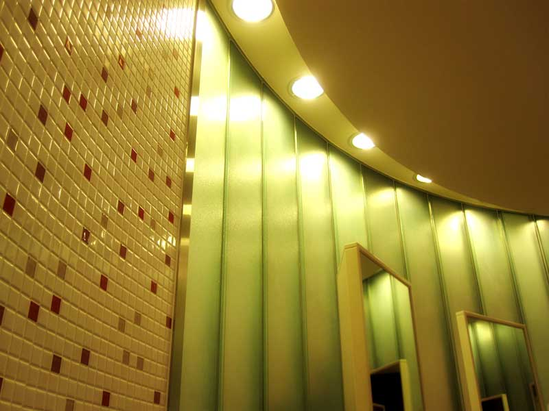

製品名
タブレットとスマホ環境では、subブロックが非表示になります。その他のページでも非表示にしたい場合、html側の<body>タグを<body class="s-n">として下さい。もしclass指定が２つ以上ある場合は半角スペースで区切って入力すればOKです。例：<body class="s-n c1">など。
詳細画像１の説明文をここに入れます

 



イメージチェンジプログラム（imgchg_pack.js）の使い方
サムネイル画像をクリックすると、上の大きな写真が入れ替わります。
html側を見れば分かりますが、大きな画像の読みこみ行は２行あります。違う点はidの指定名が異なるだけですが必ず２行入れて下さい。この２枚の画像と、サムネイルの１枚目の画像名は合わせておいて下さい。
サムネイルを増やしたい場合はhtml側のサムネイルの行をコピペで増やし、画像ファイル名やalt指定（今回の場合は大きな写真下に表示される説明文になります）を入れ替えて下さい。
サムネイルの縦横比率は統一しておいた方がきれいに入れ替わります。※中央のサムネイルだけ、わざと寸法を変更しています。
拡大画像があるコンテンツ幅より大きな画像を用意しておいて下さい。コンテンツ幅より小さい画像だと、表示に問題が出ます。
サムネイルと拡大画像は兼用です。サムネイルのサイズはcssフォルダのstyle.cssの「.thumbnail」のwidthとheightの値で変更できます。
他のページで使いたい場合は、html下部の「イメージチェンジ設定」の数行もコピーして下さい。
| 見出しが必要であればここを使います | |
|---|---|
| サンプル見出し | サンプルテキスト。 |
| サンプル見出し | サンプルテキスト。 |
| サンプル見出し | サンプルテキスト。 |
| サンプル見出し | サンプルテキスト。 |
| サンプル見出し | サンプルテキスト。 |